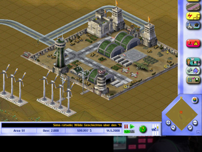

SimCity 3000
Dieser Artikel wurde für die folgenden Ubuntu-Versionen getestet:
Ubuntu 16.04 Xenial Xerus
Ubuntu 14.04 Trusty Tahr
Zum Verständnis dieses Artikels sind folgende Seiten hilfreich:
SimCity 3000  ist eine Wirtschaftssimulation. Je nach Spielmodus gilt es verschiedene Ziele zu erreichen. 13 Spielszenarien stehen zur Auswahl. Neben den vorgefertigten können auch eigene Szenarien angefertigt werden. Katastrophen erschweren den Weg zum Ziel... in der Version SimCity 3000 Deutschland ist es zusätzlich noch möglich, Gebäude zu konstruieren und diese dann ins Stadtbild zu integrieren. Jedoch bringt diese Version auch 800 Gebäude aus aller Welt mit. Auf diversen Internetseiten können weitere Fahrzeuge, Gebäude, Städte und Szenarien heruntergeladen werden.
ist eine Wirtschaftssimulation. Je nach Spielmodus gilt es verschiedene Ziele zu erreichen. 13 Spielszenarien stehen zur Auswahl. Neben den vorgefertigten können auch eigene Szenarien angefertigt werden. Katastrophen erschweren den Weg zum Ziel... in der Version SimCity 3000 Deutschland ist es zusätzlich noch möglich, Gebäude zu konstruieren und diese dann ins Stadtbild zu integrieren. Jedoch bringt diese Version auch 800 Gebäude aus aller Welt mit. Auf diversen Internetseiten können weitere Fahrzeuge, Gebäude, Städte und Szenarien heruntergeladen werden.
|  | |
| Menü | Spielszene |
Installation¶
Diese Anleitung gilt für SimCity 3000 Unlimited und die Varianten World Edition sowie Deutschland. Um das Spiel auf dem System zu installieren benötigt man den überarbeiteten Installer von liflg.org  (Mirror ). Die Datei muss noch ausführbar [1] gemacht werden und anschließend die Installation eingeleitet [2] werden:
(Mirror ). Die Datei muss noch ausführbar [1] gemacht werden und anschließend die Installation eingeleitet [2] werden:
./sc3u_2.0a-multilingual_x86.mojo.run
Die Routine startet und nach der Auswahl der Sprache und der zu installierenden Zusatzpakete wird das Spiel im angegebenen Installationsverzeichnis installiert. Die Menüeinträge für das Spiel und den Editor sind unter "Anwendungen -> Spiele" zu finden.
Um weitere Startoptionen zu verwenden bearbeitet man in einem Editor [3] die Datei sc3u.sh und paßt diese entsprechend an. Diese Datei findet man im Installationsverzeichnis des Spiels. Die möglichen Startoptionen werden in Zeile 17 angehängt:
1 | GAME_BINARY="sc3u -w" |
| Startoptionen | |
| Kürzel | Bedeutung |
-f | Vollbildmodus (Standard) |
-w | Windowmodus |
-v | Ausgabe der Version des Spieles |
-cursor:bmp | Software Mauscursor |
-cheats | keine Cheatcodes |
-station:num | Setze Radio Kanal Nummer num |
-intro:off | keine Einleitungssequenz |
-music:off | keine Musik |
-sound:off | kein Sound |
Zubehör¶
Für das Spiel können viele Erweiterungen heruntergeladen werden. Die entpackten [4] Dateien anschließend in den jeweiligen Ordner kopieren:
| Erweiterungen | |
| Erweiterung | Pfad |
| Fahrzeuge | Installationsverzeichnis/bacustom/props |
| Gebäude | Installationsverzeichnis/buildings |
| Städte | Installationsverzeichnis/cities |
| Szenarien | Installationsverzeichnis/cities/scenarios |
| Terrains | Installationsverzeichnis/cities/terrains |
Erweiterungen¶
simworld-diesims.de
 - Gebäude
- Gebäude simcityplaza.de
- Städte, Terrains und Bauwerke SimCity 3000
- Szenarien und Städte
Problembehebung¶
Sound knattert¶
SimCity verwendet zur Soundwiedergabe OSS - dies kann auf neueren Systemen zu einem knatternden Sound führen. Eine mögliche Lösung besteht darin das Spiel mit der Option -music:off zu starten oder den ALSA-OSS-Commpatibility-Layer zu nutzen.

Infobox¶
| SimCity 3000 | |
| Genre: | Wirtschaftssimulation |
| Sprache: | |
| Veröffentlichung: | 2000 |
| Publisher: | maxis |
| Systemvoraussetzungen: | Prozessor mind. 233 MHz - mind. 64 MB RAM - mind. 450 MB Festplattenspeicher |
| Medien: | CD (1) |
| Strichcode / EAN / GTIN: | 689524030009 |
| Läuft mit: | nativ |
- Erstellt mit Inyoka
-
 2004 – 2017 ubuntuusers.de • Einige Rechte vorbehalten
2004 – 2017 ubuntuusers.de • Einige Rechte vorbehalten
Lizenz • Kontakt • Datenschutz • Impressum • Serverstatus -
Serverhousing gespendet von